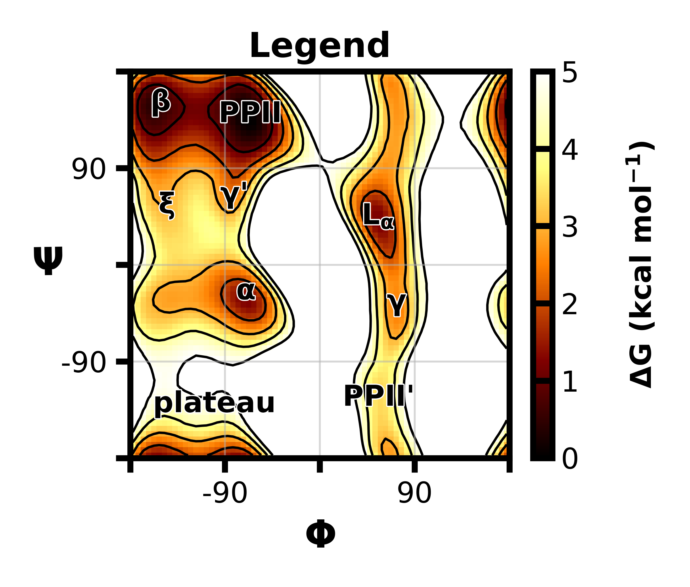

Research
-
FORCE FIELDS
Force Field Development
 Parameters for the AMBER ff15ipq protein force field. I was a part of the validation efforts for the ff15ipq-m force field [1] and have also fully developed and parameterized ff15ipq compatible parameters for the fluorinated, aromatic amino acids that are commonly used in 19F NMR [2]. To help with validation of the fluorinated amino acid parameters, I developed a way to calculate pragmatically 19F NMR relaxation rates. I've also worked on a more automated workflow for parameterizing new ligand molecules in the context of the ff15ipq force field.
[1] The Journal of Chemical Physics
(2020)
[2] The Journal of Physical Chemistry A(2022)
Code for 19F ff15ipq parameters
Code for general ff15ipq ligand parameterization
Code for calculating 19F NMR relaxation rates from MD simulation data
-
ENHANCED SAMPLING
Rare Event Sampling of Viral Capsids
 Conformational sampling of the HIV-1 capsid protein dimer using the weighted ensemble path sampling strategy.
Conformational sampling of the HIV-1 capsid protein dimer using the weighted ensemble path sampling strategy.
-
NMR
19F NMR
By combining a diHis motif, Co2+, and a chelating ligand, we can get orthogonal pseudocontact shift (PCS) datasets. This allows us to look at exact atomic positions within a distance range using the same protein.
[1] The Journal of the American Chemical Society
(2023)
Scripts for MD simulations and QM calculations to support PCS results
-
ANALYSIS TOOLS
Data Analysis and Visualization
Python package for faster and more accessible analysis of h5 datasets output from WESTPA simulations.